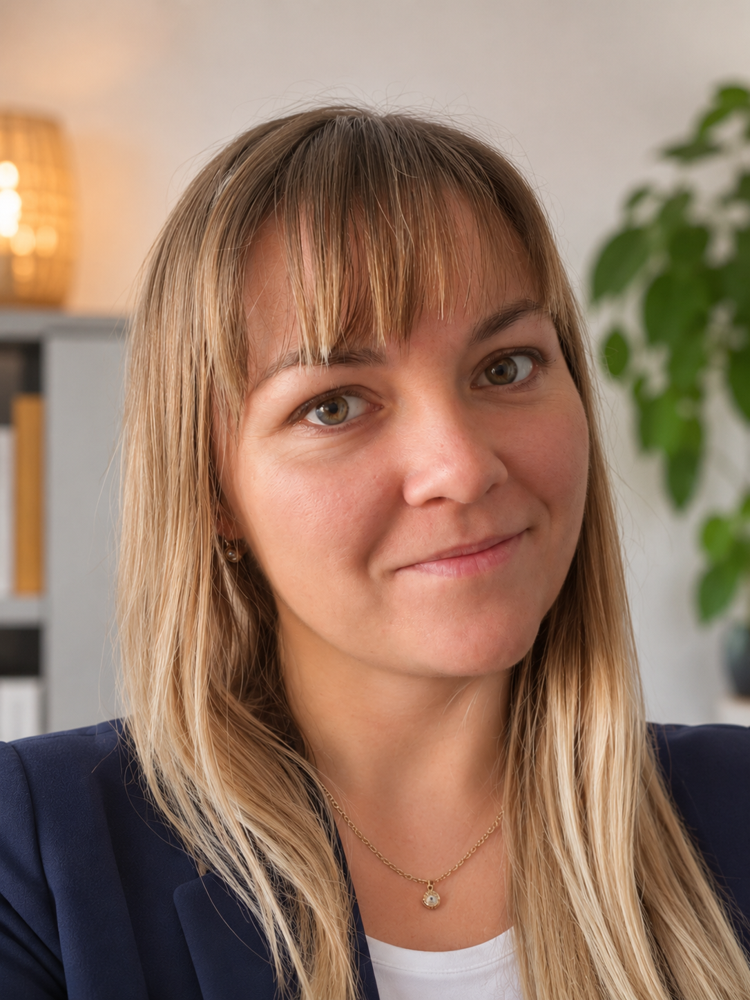
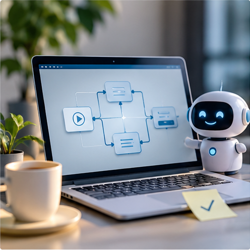
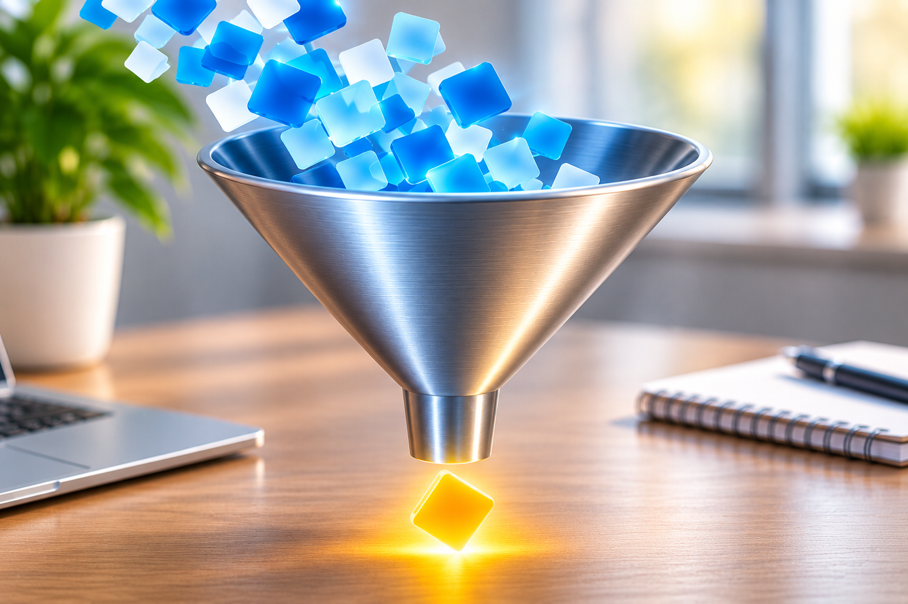
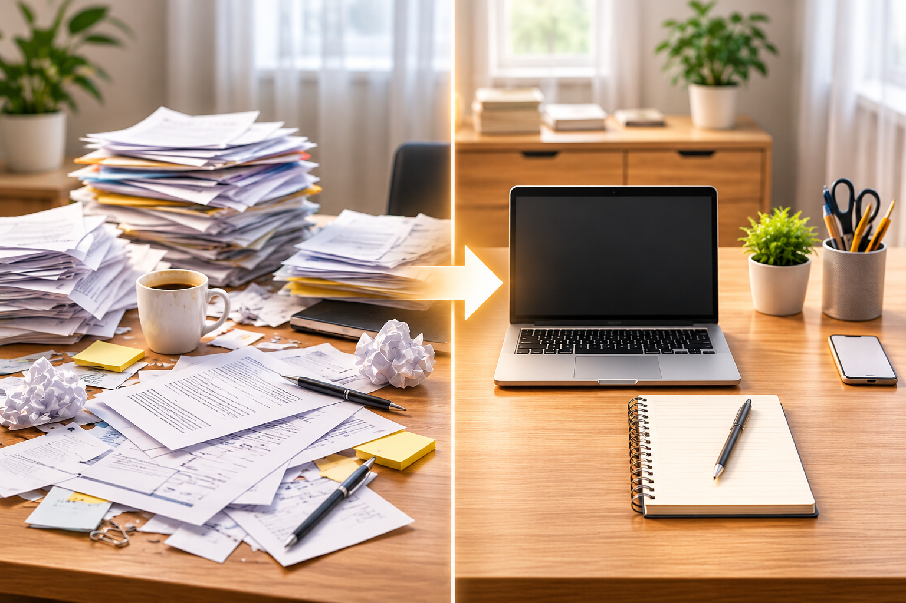

Preferuji jednotnou strukturu
Když je projekt nejasný nebo roztříštěný, rychle si zmapuji priority, závislosti, odpovědnosti a rizika a nastavím rámec, ve kterém se dá skutečně rozhodovat a pracovat.
Propojuji klienta, business a technický tým. Dávám projektům strukturu, hlídám delivery i ekonomiku a posouvám je od nápadu k reálnému výsledku.
Podívat se na projekty →

Baví mě hledat místa, kde se dá práce zjednodušit, zpřehlednit nebo úplně přenastavit. I když proces funguje, po čase se na něj dívám znovu a ptám se, jestli stále dává smysl, nebo už jen funguje ze zvyku.
Ráda pracuji s AI a automatizací – je fajn ubrat rutinu a získat lepší přehled. Mám pak více času na věci, které opravdu potřebují lidský úsudek nebo soft skills.
Jak pracuji →Když je projekt nejasný nebo roztříštěný, rychle si zmapuji priority, závislosti, odpovědnosti a rizika a nastavím rámec, ve kterém se dá skutečně rozhodovat a pracovat.
Potřebuji rozumět tomu, co tým skutečně dodal. Funkcionality si sama zkouším, porovnávám je se zadáním a kritickým pohledem komentuju výsledek – nejen projektový status.
Proces nezavádím proto, aby „nějaký byl“. Vzniká tam, kde se opakuje chyba, kde je chaos nebo nejasný ownership – a cílem je, aby fungoval i bez každodenního zásahu PM.
Multi-vendor projekt od PoC až do produkce a následného servisu.
Projekt navázal na úspěšné PoC a přešel do výrazně větší produkční implementace. Na řešení pracovaly dva samostatné dodavatelské týmy, které na sobě měly řadu technických i termínových závislostí.
Za naši stranu jsem řídila aplikační část projektu, projektový plán, tým, návaznosti, testování i produkční nasazení a fungovala jsem jako hlavní spojovací bod mezi naším týmem a druhým dodavatelem.
Projekt se podařilo dotáhnout od PoC až do produkčního řešení a následného servisu. Zkušenost mě zároveň naučila trvat u velkých projektů na technické validaci estimací ještě před uzavřením ceny a plánu.
Prioritizace rozvoje a stabilní provoz produkční AI služby.
U produkčního chatbota a voicebota se budget na další rozvoj blížil limitu, ale klient měl stále rozsáhlý backlog požadavků. Navýšení rozpočtu nebylo možné.
Místo plošného pokračování jsme proto připravili krizový plán a rozdělili backlog podle skutečné priority. Současně jsem nechala rezervu na provozní činnosti a při jejím plánování využívala i historii incidentů.
Služba pokračovala v produkčním provozu a rozvoj se přizpůsobil reálnému budgetu. Procesy, které jsme nastavili, se následně staly použitelným základem i pro další produkční projekty.

Z širokého zadání k realistickému scope odpovídajícímu budgetu.
Klient měl poměrně omezený budget, ale velmi širokou představu o tom, co by mělo řešení umět. Zadání se větvilo do několika směrů a nebylo jasné, který use case má skutečně nejvyšší hodnotu.
Místo okamžitého zahájení vývoje jsme několik týdnů zpřesňovali potřebu, oddělovali must-have od nice-to-have a společně s týmem ověřovali technickou i finanční náročnost.
Přibližně po třech týdnech vznikl scope, který odpovídal dostupnému budgetu a klient ho odsouhlasil. Vývoj tak začal až ve chvíli, kdy bylo jasné, co skutečně dodáváme.

Centrální master dokument pro řízení velkého programu.
Velký program byl původně řízen přes několik různých tabulek a složek. Kolegyně, která agendu spravovala, byla prakticky jediným člověkem, který přesně věděl, kde co najít a jak jednotlivé části fungují.
Mým úkolem bylo dát tomu řád. Vytvořila jsem jeden centrální master dokument, ve kterém se spojily projekty, smlouvy, dodavatelé, budgety, náklady, fakturace i aktuální stav jednotlivých částí programu.
Základní struktura systému funguje přibližně dva roky i po předání jiné kolegyni. To je pro mě největší známka toho, že proces nebyl postavený jen pro mě, ale dává smysl i dalším lidem.
Nejdřív potřebuji pochopit, co se opravdu dodává, komu to má pomoct a kde jsou závislosti. Teprve potom dává smysl stavět plán.
Budget, kapacity, termíny, incidenty i nejasné odpovědnosti sleduji průběžně. Nechci problém objevit až ve chvíli, kdy už není prostor reagovat.
Když něco nejde podle plánu, snažím se přijít s možnostmi dalšího postupu, jejich dopadem a doporučením, jaké jsou jiné možnosti.
Projekt pro mě není zelený proto, že to tak vypadá v reportu. Potřebuji vědět, že řešení opravdu funguje, klient rozumí výsledku a tým ví, co má dodat dál.
Hledáte někoho, kdo pomůže dostat projekt pod kontrolu, propojí business s technickým týmem a převezme odpovědnost za delivery?